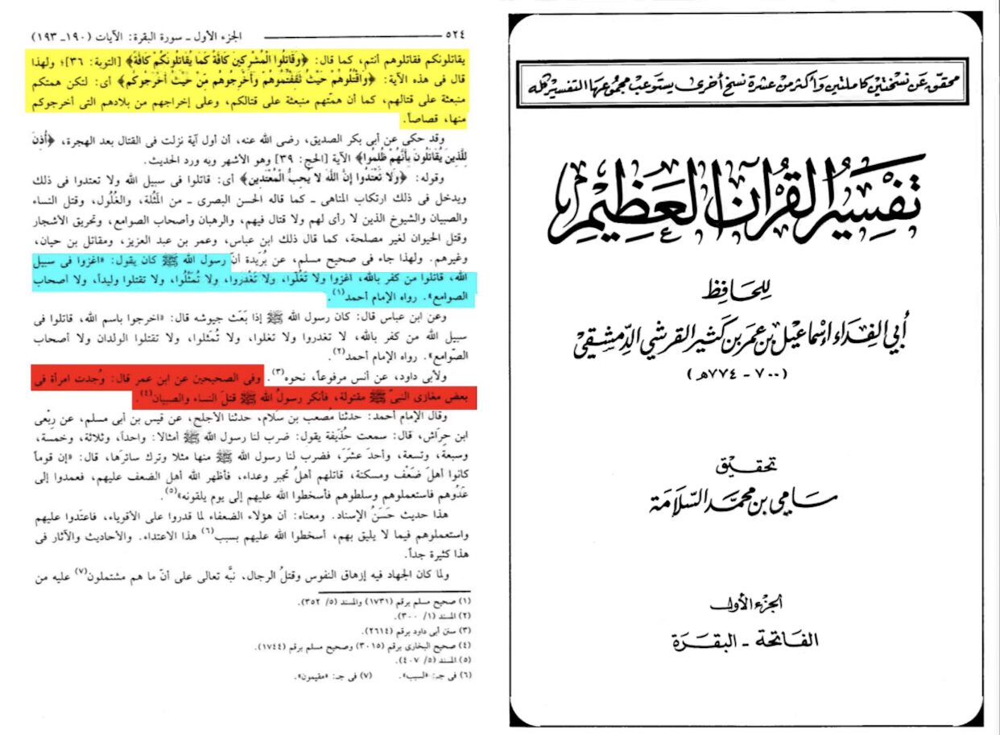
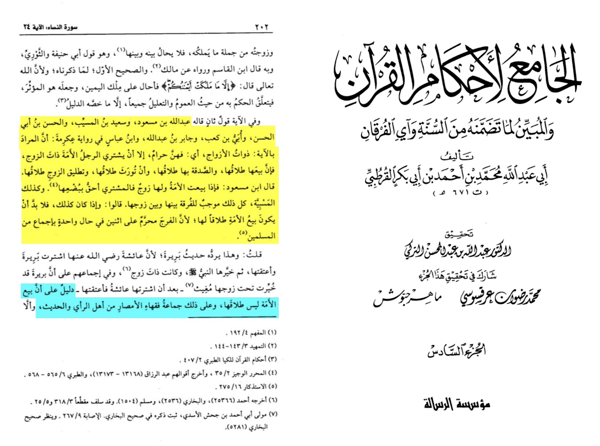
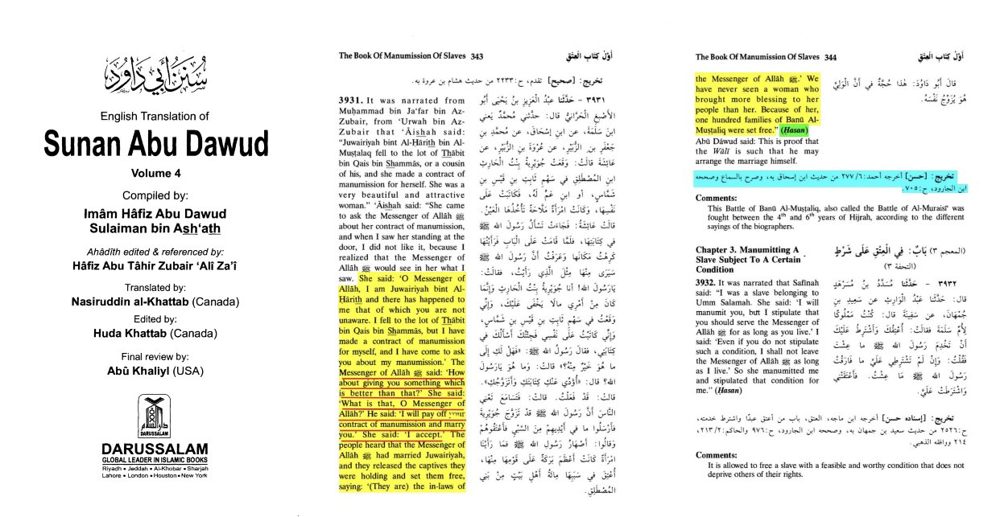
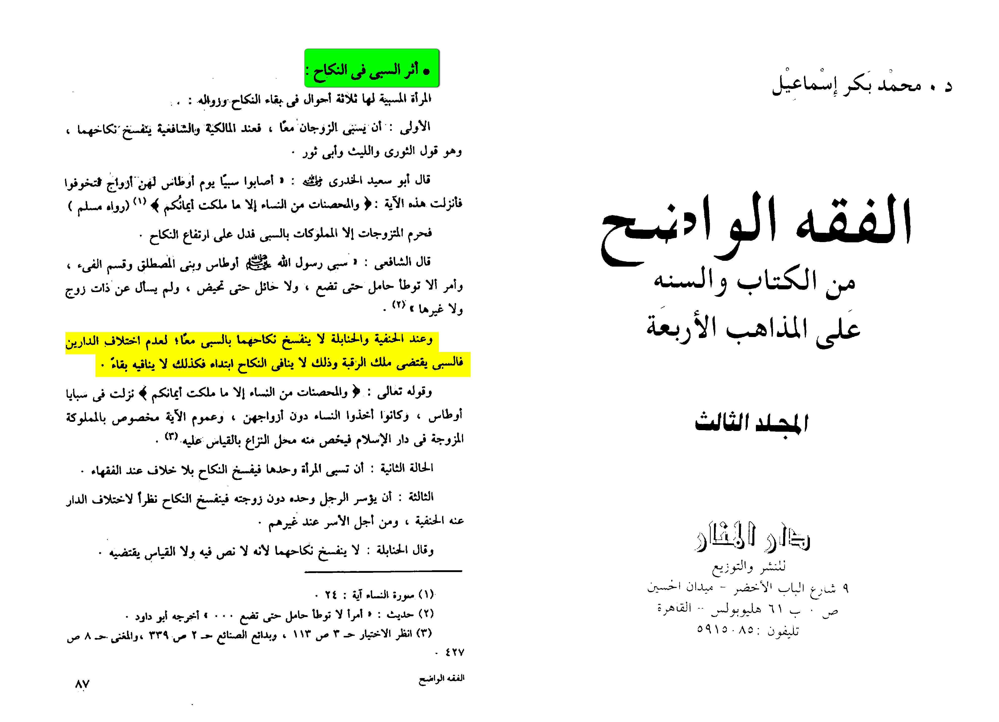
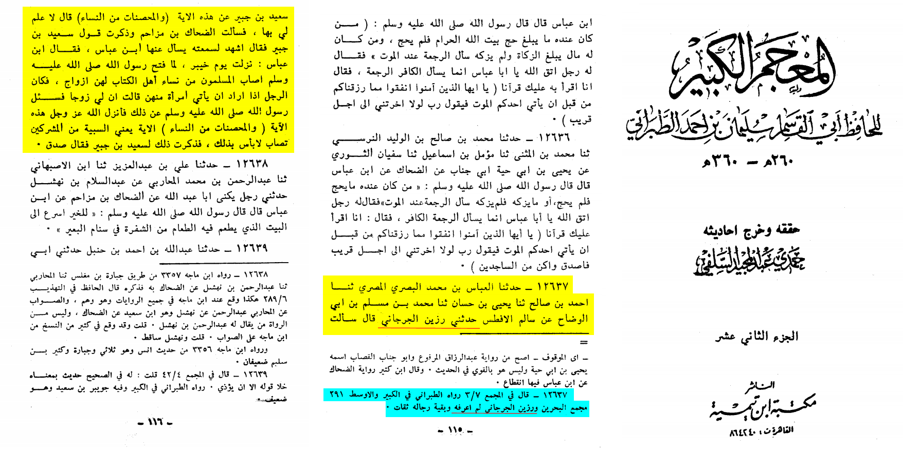
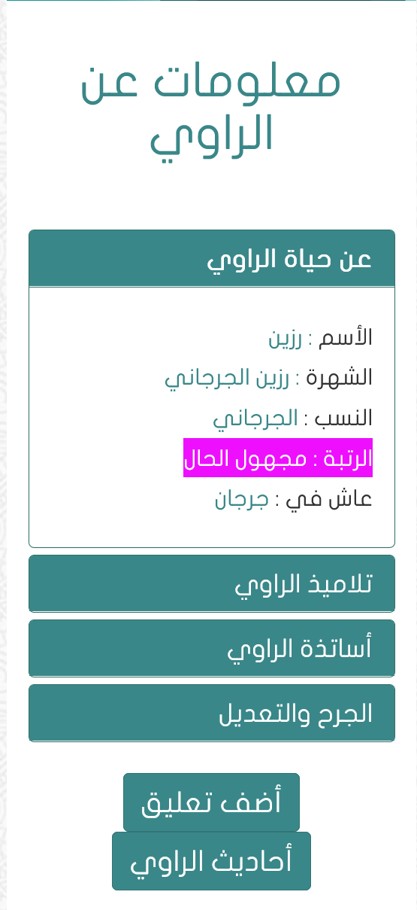

First we will start by familial fa’i
In Islam we are only allowed to fight those who fight us disbelievers split into 4 parts
1- Zhimi (non muslim living under Islamic caliphate their blood is haram as in sahih al-bukhari 3166 tareek baghdad 8/370)
2- Mua’had (someone you have peace with this or doesn’t attack you , their blood is haram Sunan Abi dawud 3052 Quran 9:4 we aren’t allowed to break treaties also Quran 60:8)
3- Must’man (someone who took your protection to come in trade or to be under your protection mentioned in Quran 9:6 their blood is haram)
4- Muharib (fighter their blood is halal however women old people aren’t allowed to be killed Quran 2:190 Sahih al-Bukhari 3015)
Translation: “Abu Al-Aliyah said, "This was the first Ayah about fighting that was revealed in Al-Madinah. Ever since it was revealed, Allah's Messenger used to fight only those who fought him and avoid non-combatants. Later, Surat Bara'ah (chapter 9 in the Qur'an) was revealed." Abdur-Rahman bin Zayd bin Aslam said similarly, then he said that this was later abrogated by the Ayah:
فَاقْتُلُواْ الْمُشْرِكِينَ حَيْثُ وَجَدتُّمُوهُمْ
(then kill them wherever you find them) (9:5).
However, this statement is not plausible, because Allah's statement:
الَّذِينَ يُقَـتِلُونَكُمْ
(...those who fight you) applies only to fighting the enemies who are engaged in fighting Islam and its people. So the Ayah means, `Fight those who fight you', just as Allah said (in another Ayah):
وَقَاتِلُواْ الْمُشْرِكِينَ كَآفَّةً كَمَا يُقَـتِلُونَكُمْ كَآفَّةً
(...and fight against the Mushrikin collectively as they fight against you collectively.) (9:36)”
-Source: Tafsir al-Quran al-azim Ibn kathir (RH) volume 1 page number 524 explaining Quran 2:190

So what is the penalty for them
The women who don’t fight and stay in the last row are freed those who fight will later on be thought for
When the war is over you have choices
Either to free them as an act of grace
“Later ˹free them either as˺ an act of grace or by ransom untilthe war comes to an end.”-Qur’an 47:4
The ruler is up to decide of what he has done wether to keep him or nah
The slave can’t be forced to work hard or even beaten
Ma'rur b. Suwaid reported:
I saw Abu Dharr wearing clothes, and his slave wearing similar ones. I asked him about it, and he narrated that he had abused a person during the lifetime of Allah's Messenger (may peace be upoe. him) and he reproached him for his mother. That person came to Allah's Apostle (ﷺ) and made mention of that to him. Thereupon Allah's Apostle (ﷺ) said: You are a person who has (remnants of) Ignorance in him. Your slaves are brothers of yours. Allah has placed them in your hand, and he who has his brother under him, he should feed him with what he eats, and dress him with what he dresses himself, and do not burden them beyond their capacities, and if you burden them, (beyond their capacities), then help them.
-Source: Sahih Muslim 1661 a
Grade: Sahih (authentic) according to the conditions of Bukhari and Muslim
Zadhan Abl Umar reported:
I came to Ibn 'Umar as he had granted freedom to a stave. He (the narrator further) said: He took hold of a wood or something like it from the earth and said: It (freedom of a slave) has not the reward evert equal to it, but the fact that I heard Allah's Messenger (way peace be upon him) say: He who slaps his slave or beats him, the expiation for it is that he should set him free.
-Source: Sahih Muslim 1657 a
Grade: Sahih (authentic) under the conditions of Bukhari and Muslim
Now for the first claim that is what you get for fighting Muslims that is a penalty and the ruler can even free them as an act of grace as we just mentioned
So what is the penalty for them
The women who don’t fight and stay in the last row are freed those who fight will later on be thought for
When the war is over you have choices
Either to free them as an act of grace
“Later ˹free them either as˺ an act of grace or by ransom untilthe war comes to an end.”-Qur’an 47:4
The ruler is up to decide of what he has done wether to keep him or nah
The slave can’t be forced to work hard or even beaten
Ma'rur b. Suwaid reported:
I saw Abu Dharr wearing clothes, and his slave wearing similar ones. I asked him about it, and he narrated that he had abused a person during the lifetime of Allah's Messenger (may peace be upoe. him) and he reproached him for his mother. That person came to Allah's Apostle (ﷺ) and made mention of that to him. Thereupon Allah's Apostle (ﷺ) said: You are a person who has (remnants of) Ignorance in him. Your slaves are brothers of yours. Allah has placed them in your hand, and he who has his brother under him, he should feed him with what he eats, and dress him with what he dresses himself, and do not burden them beyond their capacities, and if you burden them, (beyond their capacities), then help them.
-Source: Sahih Muslim 1661 a
Grade: Sahih (authentic) according to the conditions of Bukhari and Muslim
Zadhan Abl Umar reported:
I came to Ibn 'Umar as he had granted freedom to a stave. He (the narrator further) said: He took hold of a wood or something like it from the earth and said: It (freedom of a slave) has not the reward evert equal to it, but the fact that I heard Allah's Messenger (way peace be upon him) say: He who slaps his slave or beats him, the expiation for it is that he should set him free.
-Source: Sahih Muslim 1657 a
Grade: Sahih (authentic) under the conditions of Bukhari and Muslim
Now for the first claim that is what you get for fighting Muslims that is a penalty and the ruler can even free them as an act of grace as we just mentioned
Translation: “another opinion hold on by ibn abbas and ibn mas’ud Jabir bin Abdullah sa’id bin Al-musib etc is that the women who already has a husband is haram for you because a women is haram for 2 men it only becomes halal when he is not here”
-Source: Al-Jamî li ahkam al-Qur’an Al-Qurtubi (RH) volume 6 page number 202 commenting on Quran 4:24

Also if a women does not like this situation she can do a contract and leave and he can not touch her by then
“And if any of those ˹bondspeople˺ in your possession desires a deed of emancipation, make it possible for them, if you find goodness in them. And give them some of Allah’s wealth which He has granted you.”-Qur’an 24:33
So the verse is only applied if her husband isn’t in the place
But you can’t rape them
Another important point is how a women is going to accept a men who killed her familly and all.
The answer is really simple he isn’t Allowed to r@pe her at all , as al-Shaf’i said in his book al-Umm 3/253 the one who r@pes gets stoned
Al-Shafi’i said:
وَإِذَا اغْتَصَبَ الرَّجُلُ الْجَارِيَةَ ثُمَّ وَطِئَهَا بَعْدَ الْغَصْبِ وَهُوَ مِنْ غَيْرِ أَهْلِ الْجَهَالَةِ أُخِذَتْ مِنْهُ الْجَارِيَةُ وَالْعُقْرُ وَأُقِيمَ عَلَيْهِ حَدُّ الزِّنَا
If a man forced a slave girl and then has intercourse with her thereafter, and he is not ignorant, the slave girl is taken away from him, he is fined, and he is punished for adultery.
Source: al-Umm 3/253
So once again you may ask how does she accept it simply because he shows Good to her and she has the right to say I don’t want to become a right hand Possession and pay little money and get away (only for Jew muslim Christians). We show Good to them as we looked at earlier the really good treatment of slaves in Islam made the mamluk empire forget they are slaves and ruled the Islamic empire for 600 years and also we aren’t the violators as in Qūr’ān 2:190. As ibn taymiyah said in Majmu’ al-Fatawah volume 28 page number 354:
“We fight those who fight us if we want to show the religion of God”
Now for the claim of captives of Awtas
At first glance it may seem like the prophet allowed r@pe and having interc0urse with pagans
But if actually looked into profound of it is actually easy to understand
So first who are the captives of Awtas it came in the battle of awtas the tribe of hawazen leaded by malik bin auf were ready to raid mecca so it was a defensive battle
After the war as we said we don’t kill women intentionally (Sahih al-Bukhari 3015) so we have many choices after there men fled or got killed
1- leave them where they could get killed or come back stronger
2- kill them
3- take them as captives and maybe liberate them later and treat them best as possible
So we are going to choose number 3 the most logical
So after taken as captives islam leaves the choice to 4 occasions where a person could get freed
1- As an act of grace leave them (Qūr’ān 47:4)
2- traided for muslim captives (Qūr’ān 47:4)
3- write a contract ( Qūr’ān 24:33)
4- get slapped by owner (Sahih muslim 1657 a)
Why didn’t any of them do any of these lets think for a minute
This was common knowledge back then that people do why didn’t any of the men come back to them , and take them for muslim captives suhayl bin Amr done this when he was captured in the battle of badr he was traided for muslim captives
Why didn’t any of the women object to this for example juwayriyah bint Al-harith when she was caught she Didn’t want to become a slave so she did a contract with the prophet nobody told her anything they let her do this

The answer is simple it is because they became muslim and some of them married the sahaba after seeing the goodness of Islam
Narrated Marwan and Al-Miswar bin Makhrama:
When the delegate of Hawazin came to Allah's Messenger (ﷺ) declaring their conversion to Islam and asked him to return their properties and captives, Allah's Messenger (ﷺ) got up and said to them, "There Is involved in this matter, the people whom you see with me, and the most beloved talk to me, is the true one. So choose one of two alternatives: Either the captives or the properties. I have been waiting for you (i.e. have not distributed the booty)." Allah's Messenger (ﷺ) had delayed the distribution of their booty over ten nights after his return from Ta'if. So when they came to know that Allah's Messenger (ﷺ) was not going to return to them but one of the two, they said, "We prefer to have our captives." So Allah's Messenger (ﷺ) got up amongst the Muslims, and praising Allah as He deserved, said, "To proceed! Your brothers have come to you with repentance and I see (it logical) to return their captives. So, whoever of you likes to do that as a favor then he can do it. And whoever of you likes to stick to his share till we give him from the very first booty which Allah will give us, then he can do so." The people said, "We do that (i.e. return the captives) willingly as a favor, 'O Allah's Messenger (ﷺ)!" Allah's Messenger (ﷺ) said, "We do not know which of you have agreed to it and which have not; so go back and let your chiefs forward us your decision." They went back and their chief's spoke to them, and they (i.e. the chiefs) returned to Allah's Messenger (ﷺ) and informed him that all of them had agreed (to give up their captives) with pleasure, and had given their permission (i.e. that the captives be returned to their people). (The sub-narrator said, "That is what has reached me about the captives of Hawazin tribe.")
-Source: Sahih al-Bukhari 4318, 4319
Grade: Sahih (authentic) under the condition of Bukhari and muslim
Muhammed bakr Ismael writes:
“For the hanafis and hanabila the contract of marriage of two captures or prisoners of war isn’t broken if they are found in the same capture”
Al-Fiqh Al-Wadih vol.3, page#87

https://www.call-to-monotheism.com/does_islam_permit_muslim_men_to_rape_their_slave_girls_
“Muhammad bin ‘Ali narrated: “When it was the day of Awtas, the (disbeliever) men fled to the mountains and their women were taken as captives.” (Ahkam al-Qur’an, Dar al-Kotob al-Ilmiyya, Beirut, 1994 volume 2 page 173)
Some will attempt to bring a report in al Mu'jam al Kabir by al-Tabarani as evidence that married captives were forced or raped by the Muslims who came and conquered other places. However, this report is weak because there is an unknown narrator present in its chain whose name is Razeen al Jurjani.
al Haytami says in Majmu' al Zawa'id 7/3 that this man is unknown

